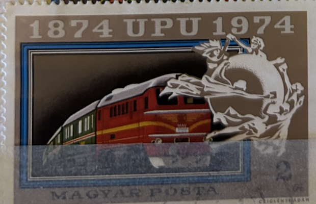
| SOURCE | TITLE| IMAGE MATCH | click to source page |
| eBay | Hungary Railroad Train Locomotive stamp 1974 | eBay | 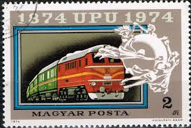 |
| PicClick UK | VINTAGE COLLECTIBLE STAMP, 1874 UPU 1974, Hungarian stamp, MAGYAR POSTA, 1974 £3.00 - PicClick UK | 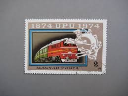 |
| Find Your Stamps Value | Value of magyar posta 2ft stamps | 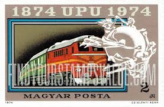 |
| iStock | Hungary Train Postage Stamp Stock Photo - Download Image Now - Extreme Close-Up, Horizontal, Hungary - iStock | 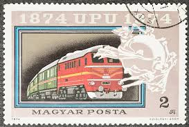 |
| The train museum at Kharkiv, Ukraine. : r/trains | 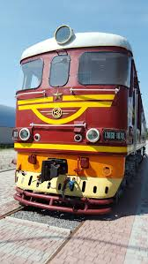 | |
| Colnect | Pocket Calendar: Dieselloc M62-116 with Freighttrain (Hungary(MÁV - Magyar Államvasutak Zrt.) Col:HU-1975-Diesel-001.01 📅 | 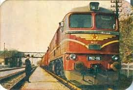 |
| eBay | 1:87 H0 TEP 60 Diesellokomotive SZD CCCP RZD Modimio 7 Soviet Russian D-lok OVP | eBay | 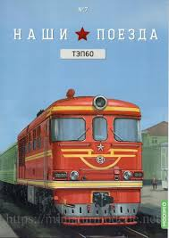 |
| Wikidata | Soviet Railways ТЭП60 - Wikidata | 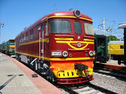 |
| eBay | Malagasy Train & Railroad Postal Stamps for sale | eBay | 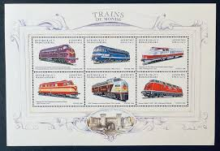 |
| eBay UK | Railroad Diesel Locomotive TEP 75 Passenger Train Russian Mint FDC 1982 | eBay UK | 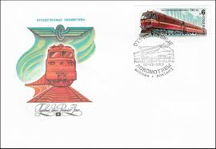 |
| Discover 10 Train wall mural and mural ideas | train art, train drawing, train and more | 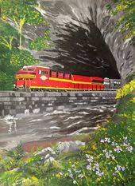 | |
| Colnect | Pocket Calendar: Dieselloc M62-116 with Freighttrain (Hungary(MÁV - Magyar Államvasutak Zrt.) Col:HU-1974-Diesel-001.01 📅 | 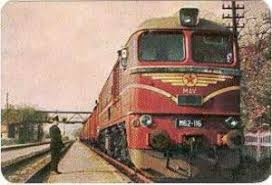 |
| Wikimedia.org | File:TY2 10.jpg - Wikimedia Commons | 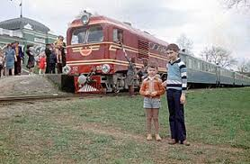 |
| Wikipedia | Musée ferroviaire russe — Wikipédia | 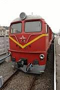 |
| eBay | Full Sheet Malagasy Transportation Postal Stamps for sale | eBay | 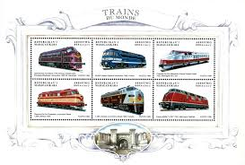 |
| Tripadvisor | A 5 star experience. - Review of Latvian Railway History Museum, Riga, Latvia - Tripadvisor | 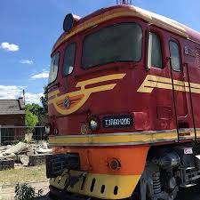 |
| RailGallery | ТЭП60-0190 — RailGallery | 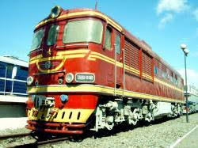 |
| Tripadvisor | Ånglokomotiv. - Picture of Latvian Railway History Museum, Riga - Tripadvisor | 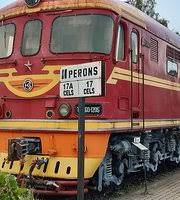 |
| Etsy | Train Print,boston & Maine,railroad Art,train Gift,train Art,train Drawing, Railroad Print,michael Kent,emd F-7 #3803 - Etsy Australia | 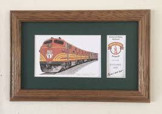 |
| Александр Червинский (chealeksandr281986) - Profile | Pinterest | 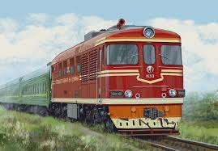 | |
| RailGallery | ТЭП60-0902 — Photo — RailGallery | 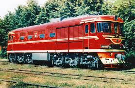 |
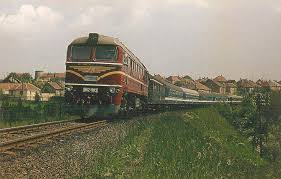 | ||
| 2TEP60 From Brest museum(now cut for profit) | 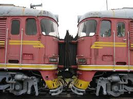 | |
| The US President's Bulletproof Railcar - US Car Number 1, the Ferdinand Magellan, sits in the Gold Coast Railway Museum in Miami. It's 120 tonnes of bulletproof, armoured railcar: a train carriage | 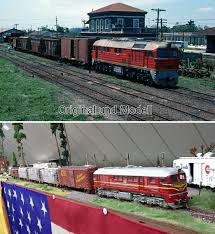 | |
| Bobina firmy JUMA 141.018 Staré Město u Uherského Hradiště (8.5.18)🙂 | 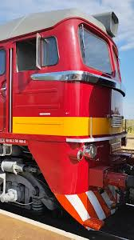 | |
| BR 120 M62 MAV | 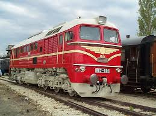 | |
| Flickr | FLICKRPEDIA*** House of Knowledge/Please comment on 3 | Flickr | 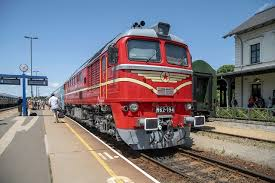 |
| South China Morning Post | The Long Way Home | South China Morning Post | 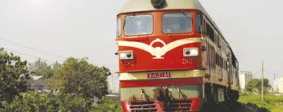 |
| RailGallery | ТЭП60-0121 — Photo — RailGallery | 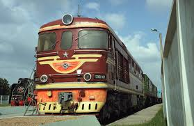 |
| YouTube | наши поезда выпуск 7:теп60 перевыпуск: выпуск 213 - YouTube | 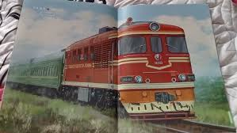 |
| Patrick Despontin (patrickdesponti) - Profile | Pinterest | 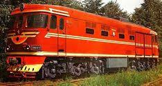 | |
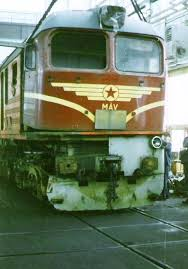 | ||
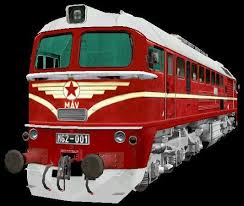 | ||
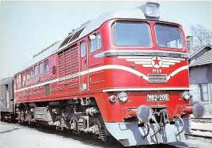 | ||
| Flickr | MÁV - The Hungarian State Railways | Flickr | 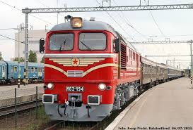 |
| YouTube | Diesel locomotive TE33A-0279 departs from the depot for a commuter train "Bishkek-1 - Tokmok"_2 - YouTube | 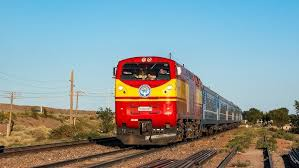 |
| Mastodon | Charlie Balogh: "Train nerding: In 1963-64, th…" - Mastodon | 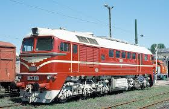 |
| Wikipedia | BDŽ class 75 - Wikipedia | 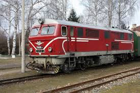 |
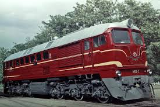 | ||
| Tripadvisor | Музей железных дорог - Picture of Russian Railway Museum, St. Petersburg - Tripadvisor | 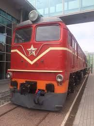 |
| eBay | Korean Train & Railroad Postal Stamps for sale | eBay | 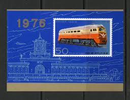 |
| YouTube | ВСЕ тепловозы серии ТЭП - YouTube | 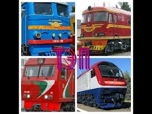 |
| Red Train Traveling Down Train Tracks | 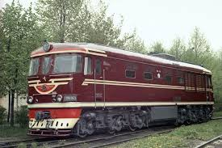 | |
| YouTube | YouTube | 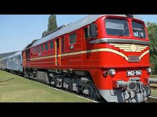 |
| Trainspo | RZD TEP60 0904 / Stantsiya Ostashkov — Trainspo | 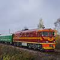 |
| Wikimedia.org | File:Haapsaalu Raudteemuuseum-Haapsalu Train Museum - panoramio.jpg - Wikimedia Commons | 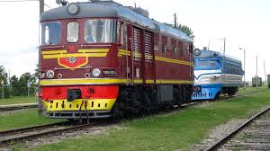 |
| Flickr | LOCOMOTORAS ANTIGUAS EN EL MUNDO | Flickr | 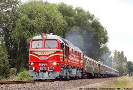 |
| PTG Tours | Railways of the Baltic States - Estonia | 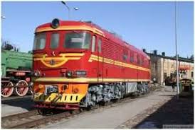 |
| RailGallery | ТЭП60-0138 — Photo — RailGallery | 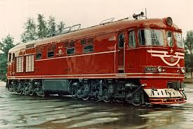 |
| TikTok | Любимі поїзда: Електровози та Тепловози для Подорожей | TikTok | |
| V43 1126 / 431 126 | ||
| Flickr | M62/628 | Flickr | |
| Wikimedia.org | File:2TE109-002B.jpg - Wikimedia Commons | |
| Alamy | SAINT PETERSBURG, RUSSIA - JANUARY 12, 2022: Soviet diesel locomotive TEP60 - the main passenger diesel locomotive of the Soviet Union in the 70s of t Stock Photo - Alamy | |
| RailRoadPics.net | 75 005.9 - Henschel DHG 1100 BB operated by BDŽ Putnicheski Prevozi EOOD taken by krpanev ( photoID 1316) - RailRoadPics.net | |
| GetArchive | 2ТЭ116-473, Russia, Belgorod region, Belgorod station (Trainpix 165891) - PICRYL - Public Domain Media Search Engine Public Domain Image | |
| RailGallery | M62-129 — Photo — RailGallery | |
| Colnect | Stamp: Diesel Locomotive 1963 (Bulgaria(100th anniversary Bulgarian state railways) Mi:BG 3641,Sn:BG 3313,Yt:BG 3153,Sg:BG 3497,Un:BG 3641 📮 | |
| Trainspo | LDZ TEP60 0192 / Riga — Trainspo |
{kind=link}
{kind=link}
{kind=link}